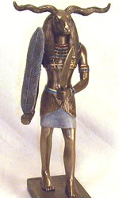

Хнум ("творець"), в єгипетській міфології бог родючості, творець, що створив світ з глини на своєму гончарному крузі. Бог-творець Хнум часто зображується у вигляді людини з головою барана, який сидить перед гончарним кругом, на якому стоїть фігурка тільки що створеного ним істоти. Хнум, як зберігач витоків Нілу і подавець його розливів, особливо шанувався на острові Елефантіна як бог-деміург.
Вважалося, що Хнум створив богів, людей, тварин, а також контролював розливи Нілу. За одним із переказів, вчений і мудрець Имхотеп, сановник і архітектор фараона Джосера (III тисячоліття до нашої ери), в зв'язку з семирічним голодом порадив Джосеру зробити багате приношення богу родючості. Фараон послухав тої ради, і Хнум з'явився йому уві сні, пообіцявши звільнити води Нілу. У той рік країна отримала прекрасний урожай.